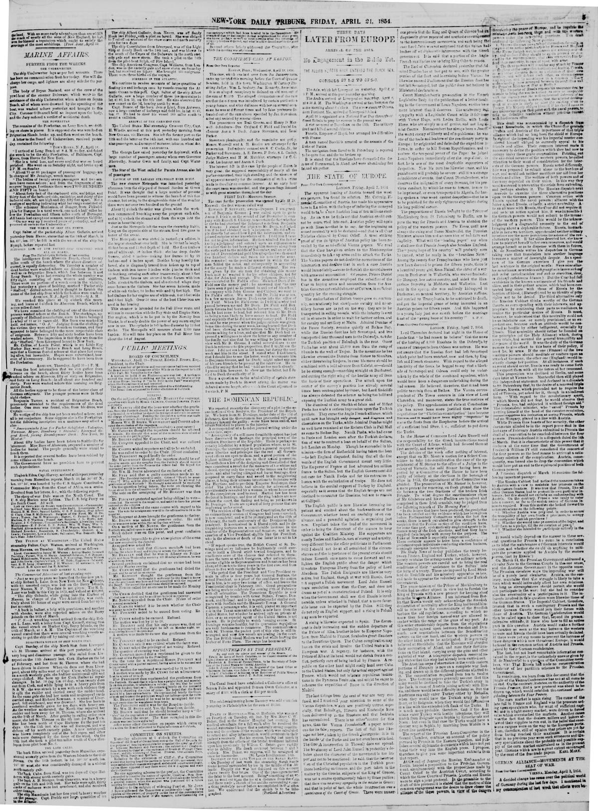

The revision of the Dominican Cogstitution, for which an extreordinary session
https://www.loc.gov/resource/sn83030213/1854-04-21/ed-1/?sp=5

See the original pageVer la página original
According to the New-York daily tribune on April 21, 1854, martial law was declared in Santiago following a conspiracy, with five ringleaders before the court and over forty persons under arrest. Meanwhile, the revision of the Dominican Constitution was completed, featuring an increased number of representatives and senators, the creation of a vice president, and changes reducing the naturalization time periods required for foreigners to become eligible as representatives and senators. Additionally, while the standard presidential and vice-presidential term was set at four years, actual President General Santana was granted two terms in office, allowing him to hold the chair until February 1861.
Con arreglo al New-York daily tribune del 21 de abril de 1854, se declaró el estado de sitio en Santiago a raíz de una conspiración, encausándose ante los jueces a cinco cabecillas y permaneciendo más de cuarenta sujetos en prisión. Entre tanto, concluyó la reforma de la Constitución dominicana, elevándose la representación en el cuerpo legislativo con mayor número de diputados y senadores, estableciéndose la magistratura de vicepresidente y abreviándose los plazos de avecindamiento para que los forasteros optasen a ser elegidos representantes y senadores. Asimismo, fijándose en cuatro años el mandato ordinario del presidente y vicepresidente, al actual mandatario, general Santana, se le concedieron dos períodos sucesivos, autorizándosele a regir la presidencia hasta febrero de 1861.
Where this standsEn qué punto está
The full text of this article is still being prepared. Until it is ready, this page carries a summary, the passage found on the page, and the link to the original, which is always one click away.El texto completo de este artículo aún se está preparando. Hasta que esté listo, esta página lleva un resumen, el pasaje encontrado en la página y el enlace al original, que siempre está a un clic.
The passage this summary was written fromEl pasaje del que se escribió este resumen
The passage where this article was found, copied from the newspaper page itself, reading errors and all. This is exactly what the summary above is based on.El pasaje donde se encontró este artículo, copiado de la propia página del periódico, con sus errores de lectura y todo. Esto es exactamente aquello en lo que se basa el resumen de arriba.
of the conspirators used to meet. Martial law has been
declared in Santiago, and five of the ring leaders are now
before the court, the finding not being as yet known ia
St. Domingo. There are upward of forty persons that are
implicated under arrest.
The revision of the Dominican Cogstitution, for which
an extreordinary session of Congress had been coovoked,
is now completed, and wll be promulgated on the 27th of
February, the tenth anniversary of the Dominican [ale
pendence. It is conceived in a liberal spirit, and its dis-
tinguisking features are a considerable increase in the
number of the Representatives and Senators, and in the
creation of a Vice President digible like the President,
who in the absence or death of the latter ia to act in his
3)
waks true, the British Consul at Si. Do-
mingo used every influence he legitimately could exer.
cise. to instil a [liberal spirit toward foreigners, and to
emeliorate some of the clauzes that referred to them;
b+ nee the term at which foreigners, after naturalization,
“If report 7}
become ¢ligible as Representatives and Scoators has been
cheng ed from ten to three years in the first case, and from
fifteen to five with regard to the latter.
“The period that the President and Vica President re.
main in office is four years, but General Santana, the
actual President, as a proof of the confidence the nation
baa in him, is to enjoy two terms of olfice, and leaves the
Presidential chair in February, 13¢1. Great preparations
are being made to celebrate the coming 27th of February
How to cite this articleCómo citar este artículo
New-York Daily Tribune. (1854). New-York [N.Y.], April 21, 185421 de abril de 1854. DR in the American PressRD en la Prensa Norteamericana. Library of Congress, Chronicling America: https://www.loc.gov/resource/sn83030213/1854-04-21/ed-1/?sp=5
ReferencesReferencias
Library of Congress, Chronicling America: New-York Daily Tribune, April 21, 185421 de abril de 1854.
Send an observationEnviar una observación
Does this article connect with your family, your town, or something you know? Did we get something wrong? Write to us. Observations go to the editor's inbox and are read by a person.¿Este artículo conecta con su familia, su pueblo o algo que usted conoce? ¿Nos equivocamos en algo? Escríbanos. Las observaciones llegan al buzón del editor y las lee una persona.
Send observationEnviar observación